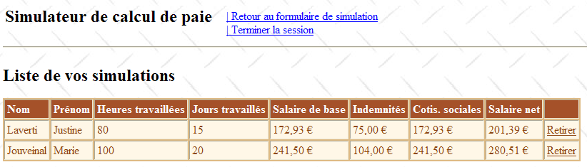
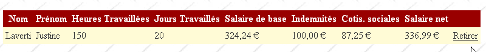
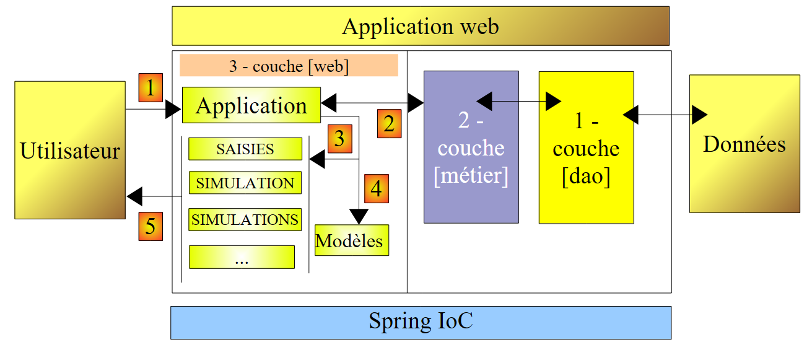
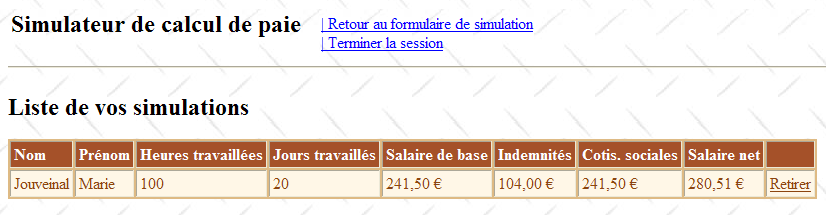
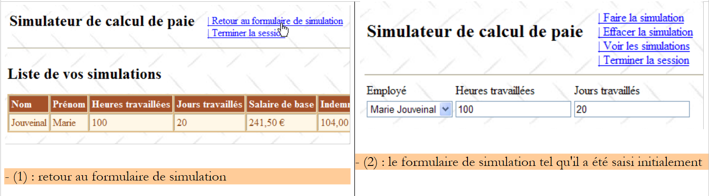
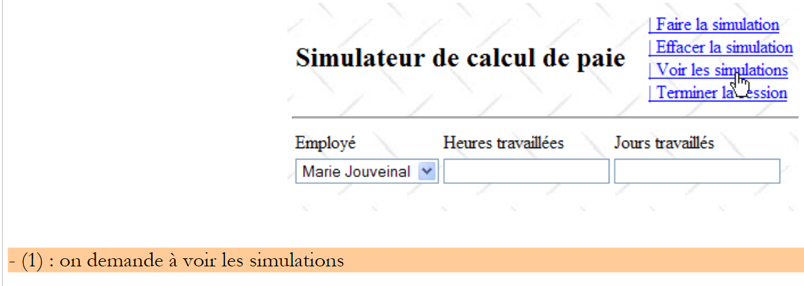

8. L'application [SimuPaie] – version 4 – ASP.NET / multi-vues / mono-page
Lectures conseillées : référence [1], Développement WEB avec ASP.NET 1.1, paragraphes :
-
Composants serveur et contrôleur d'application
-
Exemples d'applications MVC avec composants serveurs ASP
Nous étudions maintenant une version dérivée de l'application ASP.NET à trois couches étudiée précédemment et qui lui ajoute de nouvelles fonctionnalités. L'architecture de notre application évolue de la façon suivante :
 |
Le traitement d'une demande d'un client se déroule selon les étapes suivantes :
- le client fait une demande à l'application.
- l'application traite cette demande. Pour ce faire, elle peut avoir besoin de l'aide de la couche [métier] qui elle-même peut avoir besoin de la couche [dao] si des données doivent être échangées avec la base de données. L'application reçoit une réponse de la couche [métier].
- selon celle-ci, elle choisit (3) la vue (= la réponse) à envoyer au client en lui fournissant (4) les informations (le modèle) dont elle a besoin.
- la réponse est envoyée au client (5)
On a ici une architecture web dite MVC (Modèle – Vue – Contrôleur) :
- [Application] est le contrôleur. Il voit passer toutes les requêtes du client.
- [Saisies, Simulation, Simulations, ...] sont les vues. Une vue en .NET est du code ASP / HTML standard qui contient des composants qu'il convient d'initialiser. Les valeurs qu'il faut fournir à ces composants forment le modèle de la vue.
Nous allons ici implémenter le modèle (design pattern) MVC de la façon suivante :
- les vues seront des composants [View] au sein d'une page unique [Default.aspx]
- le contrôleur est alors le code [Default.aspx.cs] de cette page unique.
Seules des applications basiques peuvent supporter cette implémentation MVC. En effet, à chaque requête, tous les composants de la page [Default.aspx] sont instanciés, donc toutes les vues. Au moment d'envoyer la réponse, l'une d'elles est choisie par le code de contrôle de l'application simplement en rendant visible le composant [View] correspondant et en cachant les autres. Si l'application a de nombreuses vues, la page [Default.aspx] aura de nombreux composants et son coût d'instanciation peut devenir prohibitif. Par ailleurs, le mode [Design] de la page risque de devenir ingérable parce qu'ayant trop de vues. Ce type d'architecture convient pour des applications avec peu de vues et développées par une unique personne. Lorsqu'elle peut être adoptée, elle permet de développer une architecture MVC très simplement. C'est ce que nous allons voir dans cette nouvelle version.
8.1. Les vues de l'application
Les différentes vues présentées à l'utilisateur seront les suivantes :
- la vue [VueSaisies] qui présente le formulaire de simulation

- la vue [VueSimulation] utilisée pour afficher le résultat détaillé de la simulation :

- la vue [VueSimulations] qui donne la liste des simulations faites par le client

- la vue [VueSimulationsVides] qui indique que le client n'a pas ou plus de simulations :

- la vue [VueErreurs] qui indique une ou plusieurs erreurs :

8.2. Le projet Visual Web Developer de la couche [web]
Le projet Visual Web Developer de la couche [web] est le suivant :
 |
- en [1] on trouve :
- le fichier de configuration [Web.config] de l'application – est identique à celui de l'application précédente.
- le fichier [Global.cs] qui gère les événements de l'application web, ici son démarrage - est identique à celui de l'application précédente si ce n'est qu'il gère également le démarrage de la session utilisateur.
- le formulaire [Default.aspx] de l'application – contient les différentes vues de l'application.
- en [2] on trouve les références du projet – sont identiques à celles de la version précédente
8.3. Le fichier [Global.cs]
Le fichier [Global.cs] qui gère les événements de l'application web, est identique à celui de l'application précédente si ce n'est qu'il gère en plus le démarrage de la session utilisateur :
Global.cs
using System;
using System.Web;
using Pam.Dao.Entites;
using Pam.Metier.Service;
using Spring.Context.Support;
using System.Collections.Generic;
using istia.st.pam.web;
namespace pam_v4
{
public class Global : HttpApplication
{
// --- données statiques de l'application ---
public static Employe[] Employes;
public static string Msg = string.Empty;
public static bool Erreur = false;
public static IPamMetier PamMetier = null;
// démarrage de l'application
public void Application_Start(object sender, EventArgs e)
{
...
}
// démarrage de la session d'un utilisateur
public void Session_Start(object sender, EventArgs e)
{
// on met une liste de simulations vide dans la session
Session["simulations"] = new List<Simulation>();
}
}
}
- lignes 27-34 : on gère le démarrage de la session. Nous mettrons dans celle-ci la liste des simulations faites par l'utilisateur.
- ligne 30 : une liste de simulations vide est créée. Une simulation est un objet de type [Simulation] que nous allons détailler prochainement.
- ligne 31 : la liste de simulations est placée dans la session associée à la clé " simulations "
8.4. La classe [Simulation]
Un objet de type [Simulation] sert à encapsuler une ligne du tableau des simulations :
Son code est le suivant :
namespace Pam.Web
{
public class Simulation
{
// données d'une simulation
public string Nom { get; set; }
public string Prenom { get; set; }
public double HeuresTravaillees { get; set; }
public int JoursTravailles { get; set; }
public double SalaireBase { get; set; }
public double Indemnites { get; set; }
public double CotisationsSociales { get; set; }
public double SalaireNet { get; set; }
// constructeurs
public Simulation()
{
}
public Simulation(string nom, string prenom, double heuresTravailllees, int joursTravailles, double salaireBase, double indemnites, double cotisationsSociales, double salaireNet)
{
{
this.Nom = nom;
this.Prenom = prenom;
this.HeuresTravaillees = heuresTravailllees;
this.JoursTravailles = joursTravailles;
this.SalaireBase = salaireBase;
this.Indemnites = indemnites;
this.CotisationsSociales = cotisationsSociales;
this.SalaireNet = salaireNet;
}
}
}
}
Les champs de la classe correspondent aux colonnes du tableau des simulations.
8.5. La page [Default.aspx]
8.5.1. Vue d'ensemble
La page [Default.aspx] contient plusieurs composants [View], un pour chaque vue. Son squelette est le suivant :
<%@ Page Language="C#" AutoEventWireup="true" CodeFile="Default.aspx.cs" Inherits="pam_v4.PagePam" %>
<!DOCTYPE html PUBLIC "-//W3C//DTD XHTML 1.0 Transitional//EN" "http://www.w3.org/TR/xhtml1/DTD/xhtml1-transitional.dtd">
<html xmlns="http://www.w3.org/1999/xhtml">
<head id="Head1" runat="server">
<title>Simulateur de paie</title>
</head>
<body background="ressources/standard.jpg">
<form id="form1" runat="server">
<asp:ScriptManager ID="ScriptManager1" runat="server" EnablePartialRendering="true" />
<asp:UpdatePanel runat="server" ID="UpdatePanelPam" UpdateMode="Conditional">
<ContentTemplate>
<table>
<tr>
<td>
<h2>
Simulateur de calcul de paie</h2>
</td>
<td>
<label>
 </label>
<asp:UpdateProgress ID="UpdateProgress1" runat="server">
<ProgressTemplate>
<img src="images/indicator.gif" />
<asp:Label ID="Label5" runat="server" BackColor="#FF8000"
EnableViewState="False" Text="Calcul en cours. Patientez ....">
</asp:Label>
</ProgressTemplate>
</asp:UpdateProgress>
</td>
<td>
<asp:LinkButton ID="LinkButtonFaireSimulation" runat="server"
CausesValidation="False" OnClick="LinkButtonFaireSimulation_Click">
| Faire la simulation<br /></asp:LinkButton>
<asp:LinkButton ID="LinkButtonEffacerSimulation" runat="server"
CausesValidation="False" OnClick="LinkButtonEffacerSimulation_Click">
| Effacer la simulation<br /></asp:LinkButton>
<asp:LinkButton ID="LinkButtonVoirSimulations" runat="server"
CausesValidation="False" OnClick="LinkButtonVoirSimulations_Click">
| Voir les simulations<br /></asp:LinkButton>
<asp:LinkButton ID="LinkButtonFormulaireSimulation" runat="server"
CausesValidation="False" OnClick="LinkButtonFormulaireSimulation_Click">
| Retour au formulaire de simulation<br /></asp:LinkButton>
<asp:LinkButton ID="LinkButtonEnregistrerSimulation" runat="server"
CausesValidation="False" OnClick="LinkButtonEnregistrerSimulation_Click">
| Enregistrer la simulation<br /></asp:LinkButton>
<asp:LinkButton ID="LinkButtonTerminerSession" runat="server"
CausesValidation="False" OnClick="LinkButtonTerminerSession_Click">
| Terminer la session<br /></asp:LinkButton>
</td>
</table>
<hr />
<asp:MultiView ID="Vues1" ActiveViewIndex="0" runat="server">
<asp:View ID="VueSaisies" runat="server">
...
</asp:View>
</asp:MultiView>
<asp:MultiView ID="Vues2" runat="server">
<asp:View ID="VueSimulation" runat="server">
...
</asp:View>
<asp:View ID="VueSimulations" runat="server">
...
</asp:View>
<asp:View ID="VueSimulationsVides" runat="server">
...
</asp:View>
<asp:View ID="VueErreurs" runat="server">
...
</asp:View>
</asp:MultiView>
</ContentTemplate>
</asp:UpdatePanel>
</form>
</body>
</html>
- ligne 10 : la balise pour disposer des extensions Ajax
- lignes 11-73 : le conteneur UpdatePanel mis à jour par des appels Ajax
- lignes 12-72 : le contenu du conteneur UpdatePanel
- lignes 13-52 : l'entête qui sera présent dans chaque vue. Il présente à l'utilisateur la liste des actions possibles sous la forme d'une liste de liens.
- ligne 33 : on notera l'attribut CausesValidation="False" qui fait que les validateurs de la page ne seront pas exécutés implicitement lorsque le lien sera cliqué. Lorsque cet attribut est absent, sa valeur par défaut est True. La validation de la page pourra être faite explicitement dans le code exécuté côté serveur par l'opération Page.Validate.
- lignes 53-57 : un composant [MultiView] avec une unique vue [VueSaisies]. Pour cette raison, on a mis en dur, ligne 53, le n° de la vue à afficher : ActiveViewIndex="0"
- lignes 53-67 : un composant [MultiView] avec quatre vues : la vue [VueSimulation] lignes 59-61, la vue [VueSimulations] lignes 62-64, la vue [VueSimulationsVides] lignes 65-67, la vue [VueErreurs] lignes 68-70. Un composant [MultiView] n'affiche qu'une vue à la fois. Pour afficher la vue n° i du composant Vues2, on écrira le code :
8.5.2. L'entête
L'entête est formé des composants suivants :
 |
N° | Type | Nom | Rôle |
LinkButton | LinkButtonFaireSimulation | demande le calcul de la simulation | |
LinkButton | LinkButtonEffacerSimulation | efface le formulaire de saisie | |
LinkButton | LinkButtonVoirSimulations | affiche la liste des simulations déjà faites | |
LinkButton | LinkButtonFormulaireSimulation | ramène au formulaire de saisie | |
LinkButton | LinkButtonEnregistrerSimulation | enregistre la simulation courante dans la liste des simulations | |
LinkButton | LinkButtonTerminerSession | abandonne la session courante |
8.5.3. La vue [Saisies]
Le composant [View] nommé [VueSaisies] est le suivant :
 |
N° | Type | Nom | Rôle |
DropDownList | ComboBoxEmployes | Contient la liste des noms des employés | |
TextBox | TextBoxHeures | Nombre d'heures travaillées – nombre réel | |
TextBox | TextBoxJours | Nombre de jours travaillés – nombre entier | |
RequiredFieldValidator | RequiredFieldValidatorHeures | vérifie que le champ [2] [TextBoxHeures] n'est pas vide | |
RegularExpressionValidator | RegularExpressionValidatorHeures | vérifie que le champ [2] [TextBoxHeures] est un nombre réel >=0 | |
RequiredFieldValidator | RequiredFieldValidatorJours | vérifie que le champ [3] [TextBoxJours] n'est pas vide | |
RegularExpressionValidator | RegularExpressionValidatorJours | vérifie que le champ [3] [TextBoxJours] est un nombre entier >=0 |
8.5.4. La vue [Simulation]
Le composant [View] nommé [VueSimulation] est le suivant :

Il n'est composé que de composants [Label] dont les ID sont indiqués ci-dessus.
8.5.5. La vue [Simulations]
Le composant [View] nommé [VueSimulations] est le suivant :
 |
N° | Type | Nom | Rôle |
GridView | GridViewSimulations | Contient la liste des simulations |
Les propriétés du composant [GridViewSimulations] ont été définies de la façon suivante :
 |
- en [1] : clic droit sur le [GridView] / option [Mise en forme automatique]
- en [2] : choisir un type d'affichage pour le [GridView]
 |
- en [3] : sélectionner les propriétés du [GridView]
- en [4] : éditer les colonnes du [GridView]
- en [5] : ajouter une colonne de type [BoundField] qui sera liée (bound) à l'une des propriétés publiques de l'objet à afficher dans la ligne du [GridView]. L'objet affiché ici, sera un objet de type [Simulation].
 |
- en [6] : donner le titre de la colonne
- en [7] : donner le nom de la propriété de la classe [Simulation] qui sera associée à cette colonne.
- [DataFormatString] indique comment doivent être formatées les valeurs affichées dans la colonne.
Les colonnes du composant [GridViewSimulations] ont les propriétés suivantes :
N° | Propriétés |
Type : BoundField, HeaderText : Nom, DataField : Nom | |
Type : BoundField, HeaderText : Prénom, DataField : Prenom | |
Type : BoundField, HeaderText : Heures travaillées, DataField : HeuresTravaillees | |
Type : BoundField, HeaderText : Jours travaillés, DataField : JoursTravailles | |
Type : BoundField, HeaderText : Salaire de base, DataField : SalaireBase, DataFormatString : {0:C} (format monétaire, C=Currency) – affichera le sigle de l'euro. | |
Type : BoundField, HeaderText : Indemnités, Data Field : Indemnites, DataFormatString : {0:C} | |
Type : BoundField, HeaderText : Cotis. sociales, DataField : CotisationsSociales, DataFormatString : {0:C} | |
Type : BoundField, HeaderText : Salaire net, DataField : SalaireNet, DataFormatString : {0:C} |
On prêtera attention au fait que le champ [DataField] doit correspondre à une propriété existante de la classe [Simulation]. A l'issue de cette phase, toutes les colonnes de type [BoundField] ont été créées :
 |
- en [1] : les colonnes créées pour le [GridView]
- en [2] : la génération automatique des colonnes doit être inhibée lorsque c'est le développeur qui les définit lui-même comme nous venons de le faire.
Il nous reste à créer la colonne des liens [Retirer] :

 |
- en [1] : ajouter une colonne de type [CommandField / Supprimer]
- en [2] : ButtonType=Link pour avoir un lien dans la colonne plutôt qu'un bouton
- en [3] : CausesValidation=False, un clic sur le lien ne provoquera pas l'exécution des contrôles de validation qui peuvent se trouver sur la page. En effet, la suppression d'une simulation ne nécessite aucune vérification de données.
- en [4] : seul le lien de suppression sera visible.
- en [5] : le texte de ce lien
8.5.6. La vue [SimulationsVides]
Le composant [View] nommé [VueSimulationsVides] contient simplement du texte :
 |
8.5.7. La vue [Erreurs]
Le composant [View] nommé [VueErreurs] est le suivant :
 |
N° | Type | Nom | Rôle |
Repeater | RptErreurs | affiche une liste de messages d'erreur |
Le composant [Repeater] permet de répéter un code ASP.NET / HTML pour chaque objet d'une source de données, généralement une collection. Ce code est défini directement dans le code source ASP.NET de la page :
<asp:Repeater ID="RptErreurs" runat="server">
<ItemTemplate>
<li>
<%# Container.DataItem %>
</li>
</ItemTemplate>
</asp:Repeater>
- ligne 2 : <ItemTemplate> définit le code qui sera répété pour chaque élément de la source de données.
- ligne 4 : affiche la valeur de l'expression Container.DataItem qui désigne l'élément courant de la source de données. Cet élément étant un objet, c'est la méthode ToString de cet objet qui est utilisée pour inclure celui-ci dans le flux HTML de la page. Notre collection d'objets sera une collection List(Of String) contenant des messages d'erreur. Les lignes 3-5 inclueront des séquences <li>Message</li> dans le flux HTML de la page.
8.6. Le contrôleur [Default.aspx.cs]
8.6.1. Vue d'ensemble
Revenons à l'architecture MVC de l'application :
 |
- [Default.aspx.cs] qui est le code de contrôle de la page unique [Default.aspx] est le contrôleur de l'application.
- [Global] est l'objet de type [HttpApplication] qui initialise l'application et qui dispose d'une référence sur la couche [métier].
Le squelette du code du contrôleur [Default.aspx.cs] est le suivant :
using System.Collections.Generic;
...
public partial class PagePam : Page
{
private void setVues(bool boolVues1, bool boolVues2, int index)
{
// on affiche les vues demandées
// boolVues1 : true si le multivues Vues1 doit être visible
// boolVues1 : true si le multivues Vues2 doit être visible
// index : index de la vue de Vues2 à afficher
...
}
private void setMenu(bool boolFaireSimulation, bool boolEnregistrerSimulation, bool boolEffacerSimulation, bool boolFormulaireSimulation, bool boolVoirSimulations, bool boolTerminerSession)
{
// on fixe les options de menu
// chaque booléen est affecté à la propriété Visible du lien correspondant
...
}
// chargement de la page
protected void Page_Load(object sender, System.EventArgs e)
{
// traitement requête initiale
if (!IsPostBack)
{
...
}
}
protected void LinkButtonFaireSimulation_Click(object sender, System.EventArgs e)
{
...
}
protected void LinkButtonEffacerSimulation_Click(object sender, System.EventArgs e)
{
....
}
protected void LinkButtonVoirSimulations_Click(object sender, System.EventArgs e)
{
...
}
protected void LinkButtonEnregistrerSimulation_Click(object sender, System.EventArgs e)
{
...
}
protected void LinkButtonTerminerSession_Click(object sender, System.EventArgs e)
{
...
}
protected void LinkButtonFormulaireSimulation_Click(object sender, System.EventArgs e)
{
...
}
protected void GridViewSimulations_RowDeleting(object sender, GridViewDeleteEventArgs e)
{
...
}
}
A la requête initiale (GET) de l'utilisateur, seul l'événement Load des lignes 24-31 est traité. Aux requêtes suivantes (POST) faites via les liens du menu, deux événements sont traités :
- l'événement Load (24-31) mais le test du booléen Page.IsPostback (ligne 27) fait que rien ne sera fait.
- l'événement lié au lien qui a été cliqué :
 |
- lignes 33-36 : traitent le clic sur le lien [1]
- lignes 38-41 : traitent le clic sur le lien [2]
- lignes 43-46 : traitent le clic sur le lien [3]
- lignes 58-61 : traitent le clic sur le lien [4]
- lignes 48-51 : traitent le clic sur le lien [5]
- lignes 53-56 : traitent le clic sur le lien [6]
Pour factoriser des séquences de code revenant souvent, deux méthodes internes ont été créées :
- setVues, lignes 7-14 : fixe la ou les vues à afficher
- setMenu, lignes 16-21 : fixe les options de menu à afficher
8.6.2. L'événement Load
Lectures conseillées : référence [1], Développement WEB avec ASP.NET 1.1 :
- paragraphe Composant [Repeater] et liaison de données.
La première vue présentée à l'utilisateur est celle du formulaire vide :

L'initialisation de l'application nécessite l'accès à une source de données qui peut échouer. Dans ce cas, la première page est une page d'erreurs :

L'événement [Load] est traité de façon analogue à celle des versions ASP.NET précédentes :
// chargement de la page
protected void Page_Load(object sender, System.EventArgs e)
{
// traitement requête initiale
if (!IsPostBack)
{
// des erreurs d'initialisation ?
if (Global.Erreur)
{
// affichage vue [erreurs]
...
// positionnement menu
...
return;
}
// chargement des noms des employés dans le combo
...
// positionnement menu
...
// affichage vue [saisie]
...
}
}
Question : compléter le code ci-dessus
8.6.3. Action : Faire la simulation
Dans ce qui suit, l'écran noté (1) est celui de la demande de l'utilisateur, l'écran noté (2) la réponse qui lui est envoyée par l'application web. A partir de l'écran d'accueil, l'utilisateur peut commencer une simulation :


 |
La procédure qui traite cette action pourrait ressembler à ce qui suit :
protected void LinkButtonFaireSimulation_Click(object sender, System.EventArgs e)
{
// calcul du salaire
// page valide ?
Page.Validate();
if (!Page.IsValid)
{
// affichage vue [saisie]
...
return;
}
// la page est valide - on récupère les saisies
double HeuresTravaillées = ...;
int JoursTravaillés = ...;
// on calcule le salaire de l'employé
FeuilleSalaire feuillesalaire;
try
{
feuillesalaire = ...
}
catch (PamException ex)
{
// affichage vue [erreurs]
...
return;
}
// on met le résultat dans la session
Session["simulation"] = ...
// affichage résultats
...
// affichage vues [saisie, employe, salaire]
...
// affichage menu
...
}
Question : compléter le code ci-dessus
8.6.4. Action : Enregistrer la simulation
Une fois la simulation faite, l'utilisateur peut demander son enregistrement :
 |

La procédure qui traite cette action pourrait ressembler à ce qui suit :
protected void LinkButtonEnregistrerSimulation_Click(object sender, System.EventArgs e)
{
// on enregistre la simulation courante dans la liste des simulations présente dans la session
...
// on affiche la vue [simulations]
...
}
Question : compléter le code ci-dessus
8.6.5. Action : Retour au formulaire de simulation
Lectures conseillées : référence [1], [Développement WEB avec ASP.NET 1.1 ] : le rôle du champ caché _VIEWSTATE
Une fois la liste des simulations présentée, l'utilisateur peut demander à revenir au formulaire de simulation :
 |
On notera que l'écran (2) présente le formulaire tel qu'il a été saisi. Il faut se rappeler ici que ces différentes vues appartiennent à une même page. Entre les différentes requêtes, les valeurs des composants sont maintenues par le mécanisme du ViewState si ces composants ont leur propriété EnableViewState à true.
La procédure qui traite cette action pourrait ressembler à ce qui suit :
protected void LinkButtonFormulaireSimulation_Click(object sender, System.EventArgs e)
{
// affichage vue [saisie]
...
// positionnement menu
...
}
Question : compléter le code ci-dessus
8.6.6. Action : Effacer la simulation
Une fois revenu au formulaire de simulation, l'utilisateur peut demander à effacer les saisies présentes :
 |
La procédure qui traite cette action pourrait ressembler à ce qui suit :
protected void LinkButtonEffacerSimulation_Click(object sender, System.EventArgs e)
{
// RAZ du formulaire
...
}
Question : compléter le code ci-dessus
8.6.7. Action : Voir les simulations
L'utilisateur peut demander à voir les simulations qu'il a déjà faites :
 |
 |
La procédure qui traite cette action pourrait ressembler à ce qui suit :
protected void LinkButtonVoirSimulations_Click(object sender, System.EventArgs e)
{
// on récupère les simulations dans la session
...
// y-a-t-il des simulations ?
if (...)
{
// vue [simulations] visible
...
}
else
{
// vue [SimulationsVides]
...
}
// on fixe le menu
...
}
Question : compléter le code ci-dessus
8.6.8. Action : Supprimer une simulation
L'utilisateur peut demander à supprimer une simulation :
 |
 |
La procédure [GridViewSimulations_RowDeleting ] qui traite cette action pourrait ressembler à ce qui suit :
protected void GridViewSimulations_RowDeleting(object sender, GridViewDeleteEventArgs e)
{
// on récupère les simulations dans la session
...
// on supprime la simulation désignée (e.RowIndex est le n° de la ligne supprimée)
...
// reste-t-il des simulations ?
if (...)
{
// on remplit le GridView
...
}
else
{
// vue [SimulationsVides]
...
}
}
Question : compléter le code ci-dessus
8.6.9. Action : Terminer la session
L'utilisateur peut demander à terminer sa session de simulations. Cela abandonne le contenu de sa session et présente un formulaire vide :
 |
 |
La procédure qui traite cette action pourrait ressembler à ce qui suit :
protected void LinkButtonTerminerSession_Click(object sender, System.EventArgs e)
{
// on abandonne la session
...
// afficher la vue [saisies]
...
// positionnement menu
...
}
Question : compléter le code ci-dessus
Travail pratique : mettre en oeuvre sur machine l'application web précédente. Ajoutez-lui un comportement Ajax.